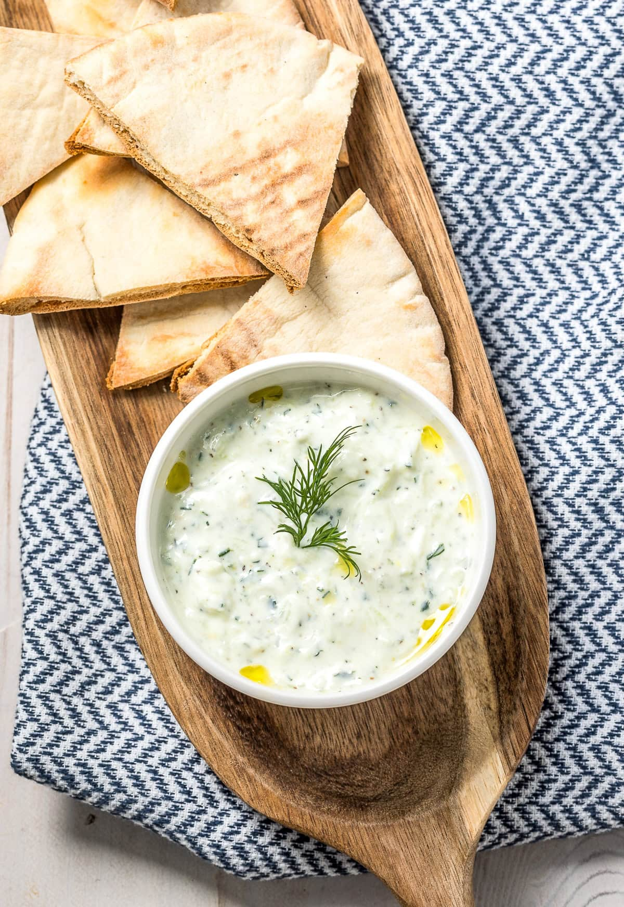
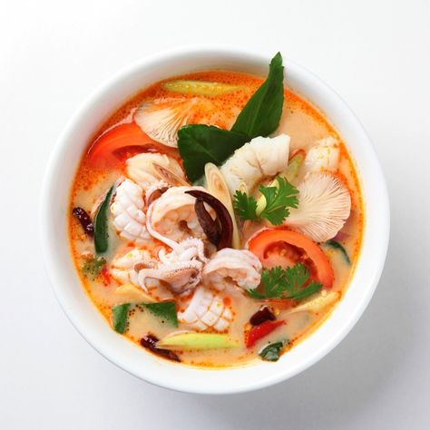
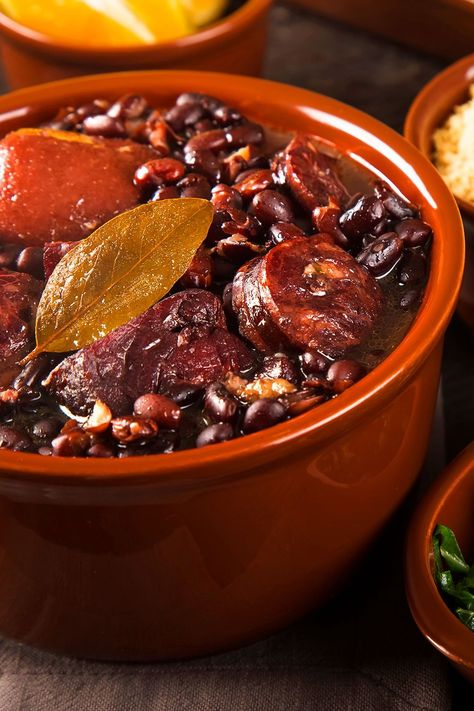
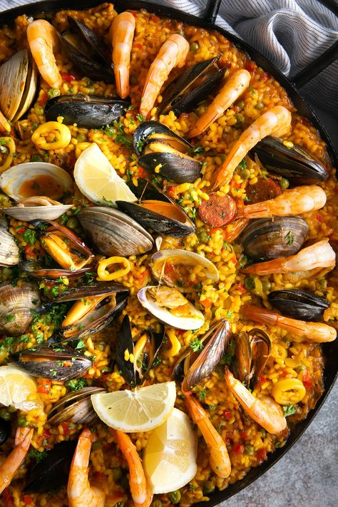
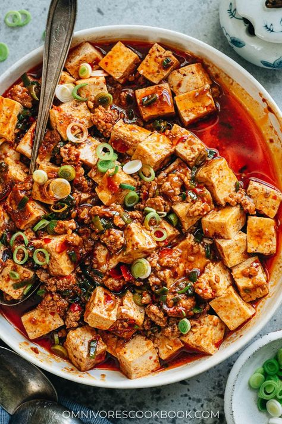
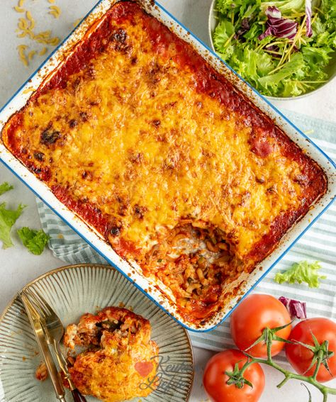
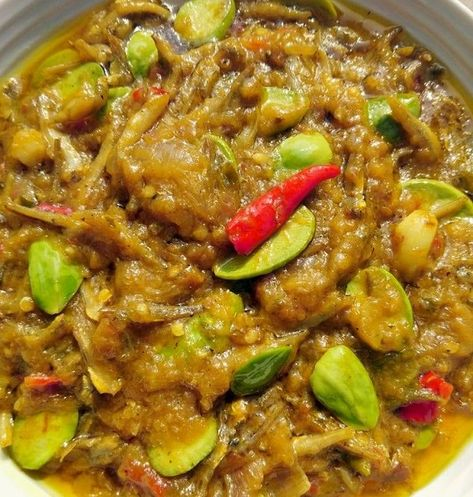
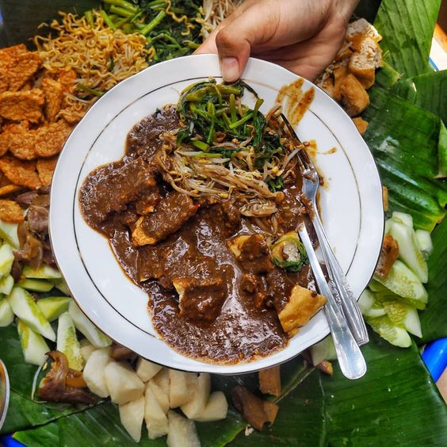

1. Resep Pasta
Bahan:
- 200 gram pasta kering
- 1 liter air
- 1 sendok makan garam
- 2 sendok makan minyak zaitun
- Saus favorit Anda (saus tomat, saus pesto, dll.)
Cara Membuat:
- Rebus air dalam panci besar hingga mendidih.
- Tambahkan garam dan minyak zaitun.
- Masukkan pasta, dan tunggu hingga pasta matang.
- Tiriskan pasta dan aduk dengan saus favorit Anda.
2. Resep Sushi
Bahan:
- 2 cangkir nasi sushi
- 4 lembar rumput laut
- Nampan bambu
- Cuka beras
- Gula
- Garam
- Isian sushi favorit Anda (ikan mentah, alpukat, mentimun, dll.)
Cara Membuat:
- Masak nasi sushi sesuai petunjuk pada kemasan.
- Campurkan cuka beras, gula, dan garam dalam mangkuk kecil.
- Tuangkan campuran cuka beras ke atas nasi dan aduk rata.
- Letakkan selembar rumput laut di atas nampan bambu.
- Sebarkan nasi tipis-tipis di atas rumput laut.
- Tambahkan isian sushi favorit Anda di tengah nasi.
- Gulung rumput laut dengan erat, dan tekan ujungnya untuk menutupnya.
- Potong gulungan menjadi beberapa bagian dengan pisau tajam.
- Sajikan dengan wasabi dan acar jahe.
3. Resep Tacos
Bahan:
- 12 tortilla jagung
- 500 gram daging giling
- 1 bawang bombay, cincang halus
- 2 siung bawang putih, cincang halus
- 1 sendok makan bubuk cabai
- 1 sendok teh jintan
- 1/2 sendok teh garam
- 1/4 sendok teh lada hitam
- Guacamole
- Salsa
- Krim asam
- Keju parut
Cara Membuat:
- Panaskan oven sampai 180 derajat Celcius.
- Dalam wajan besar, masak daging giling sampai berwarna cokelat.
- Tiriskan kelebihan minyak.
- Kembalikan daging giling ke wajan dan tambahkan bawang bombay, bawang putih, bubuk cabai, jintan, garam, dan lada hitam.
- Masak selama 5 menit lagi, atau sampai bawang bombay lunak.
- Panaskan tortilla di dalam oven selama 1-2 menit, atau sampai hangat.
- Isi setiap tortilla dengan daging giling, guacamole, salsa, krim asam, dan keju parut. Sajikan segera.
4. Resep Tteokbokki
Bahan:
- 500 gram kue beras Korea (tteokbokki)
- 1 sendok makan minyak sayur
- 1 bawang bombay, cincang halus
- 2 siung bawang putih, cincang halus
- 1 sendok makan gochujang (pasta cabai Korea)
- 1 sendok makan gochugaru (bubuk cabai Korea)
- 1 sendok makan kecap manis
- 1 sendok makan kecap asin
- 1 sendok makan gula
- 1 liter kaldu ayam
- 1/2 cangkir daun bawang, iris tipis
- Wijen putih, untuk garnish
- Air secukupnya
Cara Membuat:
- Panaskan minyak sayur dalam wajan besar.
- Tumis bawang bombay dan bawang putih sampai lunak.
- Tambahkan gochujang, gochugaru, kecap manis, kecap asin, dan gula.
- Masak selama 1 menit, atau sampai harum.
- Tuangkan kaldu ayam dan didihkan.
- Masukkan kue beras dan masak selama 5-10 menit, atau sampai lunak.
- Aduk rata dan masak selama 1-2 menit lagi, atau sampai saus mengental.
- Taburi dengan daun bawang dan wijen putih. Sajikan segera.
5. Resep Kaeng Phet
Bahan:
- 500 gram daging sapi, potong dadu
- 2 sendok makan pasta kari merah Thailand
- 1 kaleng santan
- 2 batang serai, memarkan
- 4 daun jeruk purut
- 2 batang daun salam
- 1 batang lengkuas, memarkan
- 1/2 cangkir daun kemangi
- 1/4 cangkir cabai merah iris
- 1 sendok makan gula merah
- Garam secukupnya
- Merica secukupnya
Cara Membuat:
- Panaskan minyak goreng dalam wajan.
- Tumis pasta kari merah hingga harum.
- Masukkan daging sapi dan masak hingga berubah warna.
- Tuang santan, serai, daun jeruk purut, daun salam, lengkuas, dan cabai merah.
- Masak dengan api kecil hingga daging empuk dan kuah mengental.
- Bumbui dengan gula merah, garam, dan merica secukupnya.
- Masak sebentar hingga bumbu meresap.
- Sajikan dengan nasi putih dan daun kemangi.
6. Resep Pizza
Bahan:
- Adonan pizza
- Saus tomat
- Keju mozzarella
- Topping pilihan Anda (misalnya, pepperoni, sosis, jamur, paprika, bawang bombay)
Cara Membuat:
- Panaskan oven hingga 200 derajat Celcius.
- Pipihkan adonan pizza menjadi bentuk lingkaran.
- Oleskan saus tomat pada adonan.
- Taburi keju mozzarella dan topping pilihan Anda.
- Panggang pizza selama 15-20 menit, atau hingga keju meleleh dan pinggiran pizza berwarna cokelat keemasan.
- Sajikan ketika masih panas.
7. Resep Hummus
Bahan:
- 400 gram kaleng kacang chickpeas, tiriskan dan bilas
- 1/4 cangkir tahini
- 1/4 cangkir jus lemon
- 2 siung bawang putih, cincang halus
- 1/4 cangkir minyak zaitun
- Garam secukupnya
- Merica secukupnya
- Paparan paprika asap, secukupnya
Cara Membuat:
- Campurkan semua bahan dalam food processor dan proses hingga halus dan creamy.
- Bumbui dengan garam, merica, dan paprika asap secukupnya.
- Sajikan dengan pita bread, sayuran segar, atau keripik pita.
8. Resep Tortilla
Bahan:
- 2 cangkir tepung terigu
- 1 sendok teh garam
- 1/2 sendok teh baking powder
- 1/4 cangkir shortening
- 1 cangkir air hangat
Cara Membuat:
- Campurkan tepung terigu, garam, dan baking powder dalam mangkuk besar.
- Potong shortening menjadi potongan kecil dan masukkan ke dalam campuran tepung.
- Aduk dengan jari Anda hingga adonan menjadi remah-remah.
- Tuangkan air hangat sedikit demi sedikit sambil diaduk hingga adonan menjadi kalis.
- Uleni adonan di atas permukaan yang sudah ditaburi tepung selama 5-10 menit, atau hingga halus dan elastis.
- Bagi adonan menjadi 12 bagian yang sama besar.
- Gulung setiap bagian adonan menjadi bola dan pipihkan menjadi tortilla tipis.
- Panaskan wajan anti lengket dengan api sedang. Masak tortilla selama 30 detik per sisi, atau hingga kecoklatan.
- Sajikan hangat dengan isian favorit Anda.
9. Resep Tzatziki

Bahan:
- 1 cangkir yogurt Yunani
- 1/2 mentimun, diparut dan diperas airnya
- 1 siung bawang putih, cincang halus
- 1 sendok makan minyak zaitun
- 1 sendok makan jus lemon
- 1/2 sendok teh garam
- 1/4 sendok teh merica
- Sejumput dill kering, secukupnya
Cara Membuat:
- Campurkan semua bahan dalam mangkuk dan aduk rata.
- Dinginkan di kulkas selama minimal 30 menit sebelum disajikan.
- Sajikan dengan pita bread, sayuran segar, atau daging panggang.
10. Resep Melktert
Bahan:
- 150 gr fettucine
- 50 gram keju cheddar parut
- 1/2 buah bawang bombai, cincang
- 2 butir telur, kocok lepas
- 4 buah sosis sapi
- 3 kuntum besar brokoli, belah ukuran kecil
- 250 ml susu cair
- 2 sdm fibercream
- 1 sdt maizena, larutkan dengan sedikit air
- 2 sdm mentega asin
- 1/2 sdt oregano kering
- 1/2 sdt parsley kering
- Air secukupnya
- Lada, garam himalayan, gula, dan merica
- Kaldu jamur secukupnya
Cara Membuat:
- Siapkan air untuk merebus air. Beri 2 sdm minyak dan garam himalayan secukupnya. Rebus fettucine hingga matang. Angkat, tiriskan.
- Didihkan air lagi. Masukkan brokoli, janan terlalu matang. Angkat, tiriskan.
- Siapkan wajan, masukkan mentega asin. Tumis bawang bombai hingga harum.
- Masukkan telur, orak arik sebentar. Kemudian masukkan sosis, tumis hingga matang.
- Tuangkan susu. Tambahkan keju cheddar, maizena dan fibercream. Aduk hingga masak.
- Tambahkan lada, garam himalaya, gula, kaldu jamur dan merica secukupnya. Koreksi rasa.
- Aduk pelan, tambahkan oregano dan parsley.
- Saus udah siap. Masukkan fettuchine dan brokoli. Aduk-aduk, matikan kompor. Sajikan.
11. Resep Poutine
Bahan:
- 4 cangkir kentang goreng beku
- 1 bungkus saus brown gravy
- ½ cangkir cheddar cheese curd
- ¼ sdt lada bubuk
Cara Membuat:
- Siapkan kentang beku siap goreng. Setelah itu, masak di dalam minyak sampai benar-benar matang. Tiriskan pakai saringan.
- Di tempat terpisah, ambil saus brown gravy dan tuangkan ke dalam mangkuk.
- Panaskan di dalam microwave atau bisa diikuti sesuai instruksi tertera. Berikutnya, masukkan lada ke dalamnya, aduk rata.
- Siapkan wadah besar, pindahkan kentang goreng ke dalamnya lalu siram menggunakan saus gravy.
- Tambahkan potongan cheddar cheese curd, maka poutine siap dinikmati.
12. Resep Pho
Bahan:
- (Untuk 8-10 orang)
- 600 gram Tepung terigu protein tinggi
- 10 gram Ragi
- 60 gram Margarin
- sejumput Garam
- Air dingin secukupnya -+ 300ml
- 1 sdm Gula pasir
- 250 gram Korsvet
- Olesan croisant: opsional 1.telur 2.kuning telur 3.skm dll
- Opsional bisa pakai toping diatasnya pakai gula pasir/wijen dll
Cara Membuat:
- Dalam food processor, campurkan bawang bombai, daun bawang, cabai, bawang putih, bubuk lima rempah, allspice, merica, timi, pala, dan garam; proses hingga menjadi pasta kasar. Saat mesin menyala, tambahkan kecap dan minyak secara bertahap.
- Tuang bumbu rendaman ke dalam piring besar dan dangkal, tambahkan ayam, dan balik hingga bumbu meresap.
- Tutup dan dinginkan semalaman. Biarkan ayam mencapai suhu ruangan sebelum melanjutkan.
- Nyalakan panggangan. Panggang ayam di atas api sedang-panas, balikkan sesekali, hingga kecokelatan dan matang, 35 hingga 40 menit.
- Tutup panggangan untuk mendapatkan rasa yang lebih berasap.
- Pindahkan ayam ke piring dan sajikan.
13. Resep Jerk Chicken
Bahan:
- 1 bawang bombay ukuran sedang, cincang kasar
- 3 daun bawang ukuran sedang, cincang
- 2 cabai Scotch bonnet, cincang
- 2 siung bawang putih, cincang
- 1 sendok makan bubuk lima rempah
- 1 sendok makan buah allspice, digiling kasar
- 1 sendok makan lada hitam yang digiling kasar
- 1 sendok teh timi kering, hancurkan
- 1 sendok teh pala segar parut
- 1 sendok teh garam kosher
- 1/2 cangkir kecap asin
- 1 sendok makan minyak sayur
- 2 ekor ayam (3 1/2 hingga 4 pon), dipotong empat
Cara Membuat:
- Dalam food processor, campurkan bawang bombai, daun bawang, cabai, bawang putih, bubuk lima rempah, allspice, merica, timi, pala, dan garam; proses hingga menjadi pasta kasar.
- Saat mesin menyala, tambahkan kecap dan minyak secara bertahap.
- Tuang bumbu rendaman ke dalam piring besar dan dangkal, tambahkan ayam, dan balik hingga bumbu meresap.
- Tutup dan dinginkan semalaman. Biarkan ayam mencapai suhu ruangan sebelum melanjutkan.
- Nyalakan panggangan. Panggang ayam di atas api sedang-panas, balikkan sesekali, hingga kecokelatan dan matang, 35 hingga 40 menit.
- Tutup panggangan untuk mendapatkan rasa yang lebih berasap. Pindahkan ayam ke piring dan sajikan.
14. Resep Croissant
Bahan:
- 600 gram Tepung terigu protein tinggi
- 10 gram Ragi
- 60 gram Margarin
- sejumput Garam
- Air dingin secukupnya -+ 300ml
- 1 sdm Gula pasir
- 250 gram Korsvet
- Olesan croisant: opsional 1.telur 2.kuning telur 3.skm dll
- Opsional bisa pakai toping diatasnya pakai gula pasir/wijen dll
Cara Membuat:
- Masukkan tepung,margarin,ragi dan garam aduk pakai tangan bersih jadi 1 dikom adonan.
- Campur dalam gelas air es +gula pasir aduk hingga larut, lalu masukkan dikom adonan aduk jadi 1 uleni hingga tidak menempel/ setengah Kalis.
- Farmentasi adonan dengan diTutup kain/baskom dll...
- Setelah itu kempiskan adonan lalu tipiskan adonan dengan menambah korsvet ditengah adonan yang sudah ditipiskan.
- Lipat adonan hingga beberapa kali -+4* tipiskan lipat tipiskan lipat kalau bisa bentuk kotak, diawal tidak apa tidak kotak,tetapi adonan pembentukan terakhir maximalkan dibentuk persegi panjang dan bisa dijadikan Frozen.
- Lakukan pemotongan bentuk segitiga agar croisant dapat dibentuk,bentuk semua adonan yang mau digunakan, fermentasi -+30-60 mnt.
- Baking adonan croissant dioven dengan suhu 200°c 15-20 menit.
- Setelah matang bisa langsung disajikan.
15. Resep Kimchi
Bahan:
- 3 sdm garam
- 1 wortel potong tipis memanjang
- 6 cangkir air
- 900 gr sawi putih, potong kotak sedang
- 6 tangkai daun bawang, potong dan sayat tipis
- 1/2 sdm jahe segar, cincang
- 3 sdm saus ikan/udang Korea. Namun jangan menggunakan bahan ini jika Anda ingin membuat kimchi vegetarian
- 1/4 cangkir cabai kering Korea halus atau cabai halus lainnya
- 1 cangkir lobak Korea, cincang kasar
- 1 sdm gula
Cara Membuat:
- Sebelum membuatnya, cucilah semua bahan mulai dari sawi, wortel, dan sayuran lainnya agar terhindar dari kuman.
- Larutkan garam ke dalam air pada wadah yang bersih.
- Masukkan sawi putih ke dalam air garam tersebut, tekan, dan tutup sawi hingga 12 jam. Lalu diamkan.
- Setelah 12 jam, keringkan sawi dan sisihkan airnya.
- Setelah itu campurkan bahan lainnya seperti wortel dan lobak. Tambahkan sedikit garam.
- Langkah selanjutnya, haluskan, dan campurkan bumbu kimchinya seperti jahe, saus ikan, bubuk cabai.
- Setelah bumbu jadi, campurkan bumbu pada kimchi secara merata.
- Masukkan kembali bahan kimchi ke wadah besar tertutup, masukkan sedikit air garam yang sudah disisihkan sebelumnya.
- Setelah semua masuk ke dalam wadah, tutup rapat, dan diamkan selama sehari atau lebih. Hal ini sesuai selera untuk tingkat keasamannya.
- Saat tingkat keasaman sudah sesuai, kimchi sudah bisa dinikmati.
16. Resep Curry
Bahan:
- Nasi Jepang: 172 gr
- Daging Sapi atau Ayam: 450 gr
- Kentang: 2 buah
- Wortel: 2 buah
- Bawang Bombai: 1 buah
- Minyak Goreng: 1 sdm
- Air: 237 ml
- Kaldu: 2 jenis
- Tepung Maizena: secukupnya
- Garam: secukupnya
- Masala: secukupnya
Cara Membuat:
- Potong Sayur dan Daging: Potong daging sapi atau ayam, kentang, wortel, dan bawang bombai menjadi potongan-potongan kecil.
- Tumis Daging: Panaskan wajan di atas api kompor sedang, tambahkan minyak goreng. Masukkan daging dan tumis hingga merata.
- Tumis Sayuran: Masukkan sayuran yang sudah dipotong, tumis kembali. Tambahkan air dan didihkan. Kecilkan api, biarkan dimasak selama 40-50 menit.
- Siapkan Kaldu: Siapkan panci, panaskan 710 gr air dan masukkan dua jenis kaldu. Iris dua buah bawang bombai hingga sangat tipis. Sisihkan.
- Tumis Bawang Bombai: Panaskan mentega di wajan baru, tumis irisan bawang bombai hingga berwarna coklat selama 15-20 menit.
- Campurkan Kari dengan Daging: Tuangkan kari ke dalam panci berisi daging sedikit demi sedikit sambil terus diaduk.
- Masak Hingga Mengental: Jika sudah mengental, masukkan garam, masala, aduk, dan biarkan mendidih selama 10 menit. Taburi garam. Sajikan di atas nasi jepang.
17. Resep Tom Yum

Bahan:
- 150 gr fettucine
- 50 gram keju cheddar parut
- 1/2 buah bawang bombai, cincang
- 2 butir telur, kocok lepas
- 4 buah sosis sapi
- 3 kuntum besar brokoli, belah ukuran kecil
- 250 ml susu cair
- 2 sdm fibercream
- 1 sdt maizena, larutkan dengan sedikit air
- 2 sdm mentega asin
- 1/2 sdt oregano kering
- 1/2 sdt parsley kering
- Air secukupnya
- Lada, garam himalayan, gula, dan merica
- Kaldu jamur secukupnya
Cara Membuat:
- Siapkan air untuk merebus air. Beri 2 sdm minyak dan garam himalayan secukupnya. Rebus fettucine hingga matang. Angkat, tiriskan.
- Didihkan air lagi. Masukkan brokoli, janan terlalu matang. Angkat, tiriskan.
- Siapkan wajan, masukkan mentega asin. Tumis bawang bombai hingga harum.
- Masukkan telur, orak arik sebentar. Kemudian masukkan sosis, tumis hingga matang.
- Tuangkan susu. Tambahkan keju cheddar, maizena dan fibercream. Aduk hingga masak.
- Tambahkan lada, garam himalaya, gula, kaldu jamur dan merica secukupnya. Koreksi rasa.
- Aduk pelan, tambahkan oregano dan parsley.
- Saus udah siap. Masukkan fettuchine dan brokoli. Aduk-aduk, matikan kompor. Sajikan.
18. Resep Feijoada

Bahan:
- 500 gram telinga sapi / kaki sapi / lower parts
- 250 gram daging bagian brisket / skirt
- 250 gram daging sandung lamur / sengkels
- 250 gram hati sapi
- 250 gram Jantung sapi
- 250 gram beef salami / jerky / aged beef / Sei
- 250 gram kedelai hitam
- 10 siung Garlic
- 4 lembar Bay leaves
- 2 buah Bombay
- 2 sdt Black pepper
- 1 sdt smoke paprika
- 1 sdt jintan bubuk
- 1 sdt garam atau lebih
- 1 sdm olive oil
Cara Membuat:
- Siapkan Bahan Bahan : haluskan bawang putih dan bombay (chopped halus). Iris kecil” beef bacon, salami/sei.
- Rendam kacang hitam. Masak hingga lunak, sesekali aduk dan buang busa yg terapung.
- Panaskan beef bacon hingga crispy dan berminyak, tqmbahkan olive oil, masukkan garlic dan bombay, tumis hingga harum. Masukkan Salami/ Sei/jerky.
- Karena sy menggunakan kaki sapi, jd Pan seared dulu agar hilang amisnya dan rebus kaki hingga setengah lunak dengan bay leaves, mix peppercorn utuh, bawang putih dan sedikit garam. Skip bila tdk menggunakan kaki. Potong” daging, hati, jantung sapi bite size.
- Masukkan bumbu” lainnya. Pan seared daging, jantung dan hati di Pan yg panas agar charred. Tambahkan potongan sausage. Campur dengan tumisan bumbu.
- Masukkan rebusan kacang hitam dan airnya. Masak hingga lunak. Sy pakai presto 1 jam dan biarkan hingga dingin baru dibuka. Mashed sdbagian dipot.
- Keesokan harinya akan lebih gelap.
- Saus udah siap. Sajikan.
19. Resep Dimsum
Bahan:
- 500 gram ayam fillet (gunakan bagian paha)
- 150-200 gram udang, kupas kulitnya
- 2-3 sdm tepung tapioka
- 1 butir telur
- 2 batang daun bawang, iris tipis
- 1 sdm minyak wijen
- 1 sdt gula pasir
- 2 sdm saus tiram
- 1 sdt garam atau kecap asin
- 2 siung bawang putih
- 1 sdt lada bubuk
- Kulit (bisa menggunakan kulit pangsit)
Cara Membuat:
- Langkah resep dimsum ayam pertama, masukkan daging ayam, udang, dan bawang putih dalam blender atau food processor, giling kasar.
- Selanjutnya, siapkan juga serutan wortel pada wadah, sisihkan.
- Kemudian, pindahkan adonan ke wadah, lalu campurkan semua bahan dengan telur. Lalu, uleni hingga semua bahan tercampur rata.
- Terakhir, masukan tepung tapioka, aduk dengan spatula sampai tercampur rata.
- Siapkan kulit pangsit, masukkan adonan dan beri topping wortel parut
- Selanjutnya, siapkan kukusan yang sebelumnya sudah kamu panaskan. Oles bagian dasarnya dengan minyak goreng.
- Kukus selama sekitar 5 menit, lalu berikan olesan minyak pada bagian pinggir kulitnya. Kemudian, kukus kembali sampai matang.
20. Resep Paella

Bahan:
- 2 cup beras
- 125 gr corn
- Secukupnya air atau air kaldu
- 1 buah Tomat besar, iris dadu
- 2 buah Paprika iris dadu
- 1 buah bawang bombay iris dadu
- 12 Udang sedang
- 8 buah Calamar
- 2 sdt bumbu paella (rosemary, thym, cabai, garlic, oregano, kunyit)
- 1 1/2 sdm Garam
- Penyedap secukupnya
- Beberapa helai safron
Cara Membuat:
- Potong dadu tomat, paprika, bawang bombay, siapkan udang dan calamarinya.
- Tumis bawang bombay, kemudian paprika dan tomat. Masukan seafood, tumis sebentar hingga setengah matang, angkat seafood, sisihkan.
- Masukkan beras yang sudah dicuci ke wajan tadi dan aduk rata
- Masukkan bumbu-bumbu dan safron, tambahkan air atau air kaldu. Masak hingga nasi setengah matang. Lalu masukan seafood tadi, jagung dan masak kembali hingga matang. Masak dengan api kecil saja supaya tidak cepat gosong sambil ditutup.
- Sesekali diaduk rata lalu tutup lagi. Masak hingga matang.
- Matikan api, tutup wajan biarkan hingga agak hangat, sajikan.
21. Resep Moushaka
Bahan:
- 5 buah terong, diiris tipis lalu di panggang
- 250 gr daging sapi atau domba cincang
- Garam secukupnya
- 300 gr keju parut
- 4 sdm saus tomat
- 2 sdm minyak zaitun
- 100 g mentega tawar
- 75 g keju mozzarella, parut
- 50 gram margarin
- 50 gram tepung terigu
- 250 ml susu
- Garam dan merica secukupnya
- ½ sdt pala bubuk
- 1 butir telur, kocok sebentar
- 75 gram keju
Cara Membuat:
- Panggang Terong: Iris tipis terong dan panggang hingga matang.
- Tumis Daging: Panaskan minyak, tumis daging sapi atau domba hingga matang.
- Buat Saus Keju: Campurkan mentega tawar, tepung terigu, susu, garam, merica, dan pala bubuk. Aduk hingga mengental.
- Campurkan: Campurkan saus keju dengan daging yang sudah matang.
- Buat Taburan: Parut keju mozzarella.
- Susun lapisan terong, daging, dan saus di dalam loyang.
- Taburi dengan keju mozzarella parut.
- Panggang dalam oven hingga keju meleleh dan matang.
- Moussaka siap disajikan.
22. Resep Gazpacho
Bahan:
- 6-8 buah tomat matang, dipotong-potong
- 1 buah mentimun, dikupas dan dipotong-potong
- 1 buah paprika merah, dicincang
- 1 buah bawang putih, cincang halus
- 1/4 cangkir minyak zaitun
- 2 sendok makan cuka anggur merah
- 4 cangkir kaldu sayuran atau jus tomat
- Garam dan merica secukupnya
- Sejumput cabai merah bubuk (opsional)
- 1/2 cuilan roti putih, potong kecil (opsional)
Cara Membuat:
- Cuci bersih tomat, mentimun, dan paprika.
- Potong-potong tomat, mentimun, dan paprika.
- Masukkan potongan tomat, mentimun, paprika, bawang putih, dan roti (jika digunakan) ke dalam blender atau prosesor makanan.
- Proses bahan-bahan hingga halus dan tercampur secara menyeluruh.
- Selama blender berjalan, tambahkan minyak zaitun dan cuka anggur merah perlahan-lahan hingga tercampur dengan baik.
- Tambahkan kaldu sayuran atau jus tomat perlahan-lahan hingga mencapai kekentalan yang diinginkan.
- Beri garam, merica, dan cabai merah bubuk (jika digunakan) sesuai dengan selera.
- Dinginkan gazpacho dalam lemari es selama beberapa jam atau semalam agar rasanya lebih enak.
- Sajikan gazpacho dingin. Gazpacho siap disajikan dengan taburan irisan mentimun dan minyak zaitun.
23. Resep Tahu Mapo

Bahan:
- 2 buah tahu sutra
- 100 gram daging giling
- 3 siung bawang putih
- 1 cm jahe, memarkan
- 2 buah cabai kering, cincang halus
- 1 1/2 sdm kecap manis
- 1 1/2 sdm saus tiram
- 1 sdm minyak goreng
- 1 sdm daun bawang kecil, iris halus
- Garam, merica, dan cabai bubuk secukupnya
Cara Membuat:
- Didihkan air, rebus tahu selama satu menit. Angkat dan potong-potong.
- Panaskan minyak, tumis bawang putih, jahe, dan cabai kering hingga harum.
- Masukkan daging giling dan tumis hingga matang.
- Tambahkan kecap manis, saus tiram, dan garam. Aduk rata.
- Masukkan potongan tahu dan daun bawang. Aduk rata.
- Masak selama tiga sampai empat menit atau hingga kuah mengental.
- Tambahkan larutan tepung sagu dan aduk pelan-pelan hingga mengental.
- Beri minyak wijen dan taburi daun bawang. Angkat dan hidangkan selagi panas.Tahu mapo siap disajikan dengan nasi hangat.
24. Resep Macaroni Schotel

Bahan:
- 500 gr macaroni
- 200 gr keju cheddar parut
- 1000 ml susu cair
- 100 gr sosis sapi/daging giling
- 2 buah bawang bombai kecil
- 2 siung bawang putih
- 4 sdm tepung terigu (larutkan dengan sedikit air)
- 2 butir telur (kocok lepas)
- 50 gr jagung manis pipil
- 50 gr wortel potong dadu
- Garam, gula, merica, bubuk oregano secukupnya
- Topping: keju mozzarella
Cara Membuat:
- Rebus macaroni dengan 1 sdm minyak dan sedikit garam hingga matang, tiriskan.
- Lelehkan margarin, tumis bawang bombay dan bawang putih hingga harum.
- Campurkan susu, telur, garam, merica, kaldu bubuk, dan pala bubuk dalam satu wadah. Aduk rata.
- Panaskan margarin, tumis bawang bombai dan bawang putih hingga harum. Masukkan sosis, aduk dan masak sampai sosis agak kering.
- Dalam wadah tahan panas, susun setengah bagian makaroni, tumisan sosis, keju gampang leleh, lalu tutup dengan makaroni lagi. Tuang campuran susu.
- Panggang macaroni schotel dalam oven hingga matang, atau kukus hingga matang jika tidak memiliki oven.
- Taburi macaroni schotel dengan keju mozzarella parut.
- Angkat dan sajikan macaroni schotel dengan nasi hangat, Macaroni schotel siap disajikan.
25. Resep Rendang
Bahan:
- 1 kg daging sapi
- 1 kg santan pekat dari 3 butir kelapa tua
- 1 gelas air
- 2 batang serai
- 5 lembar daun jeruk purut
- 2 lembar daun kunyit
- 2 buah asam kandas
- 5 buah cengkeh
- 2 cm kayu manis
- 2 buah bunga lawang (jika ada)
- Garam secukupnya
- Bumbu halus: 20 buah cabai merah, 20 siung bawang merah, 6 siung bawang putih, 2 cm jahe, 2 cm lengkuas, 1 sdt ketumbar
Cara Membuat:
- Giling halus kunyit, jahe, bawang putih, bawang merah, dan lengkuas dengan 1/2 sdt garam. Kemudian giling kasar cabe rawit.
- Panaskan minyak, tumis bumbu halus hingga harum. Masukkan daun salam, serai, dan lengkuas. Aduk hingga harum.
- Masukkan daging sapi dan tumis hingga berubah warna.
- Tuangkan santan pekat dan air. Aduk rata.
- Masak rendang dengan api kecil hingga daging empuk dan kuah mengental. Aduk terus agar tidak gosong.
- Tambahkan asam kandas, cengkeh, kayu manis, dan bunga lawang (jika ada). Aduk rata.
- Masak hingga bumbu meresap dan kuah mengental. Aduk terus agar tidak gosong.
- Sajikan rendang dengan nasi hangat dan pelengkap lainnya seperti sambal dan lalapan.
26. Resep Sate Ayam
Bahan:
- Daging ayam fillet: 500 gram
- Garam: secukupnya
- Air jeruk nipis: 1/2 jeruk nipis
- Bawang putih halus: 3 siung
- Jahe halus: 1 cm
- Lada bubuk: 1/2 sdt
- Tusuk sate: secukupnya
- Sambal kacang: 30 cabai rawit setan, 2 siung bawang putih, garam dan gula secukupnya, minyak goreng untuk tumis
Cara Membuat:
- Potong daging ayam fillet menjadi dadu.
- Lumuri daging ayam dengan air jeruk nipis, bawang putih halus, jahe halus, lada bubuk, dan garam.
- Diamkan selama 30 menit.
- Tusuk daging ayam dengan tusuk sate.
- Panggang sate ayam di wajan anti lengket hingga matang.
- Buat Sambal Kacang: Rebus cabai rawit setan dan bawang putih. Uleg atau blender sampai halus. Tumis dengan minyak goreng, tambahkan garam dan gula pasir.
- Masak sampai sambal matang dan air menyusut. Beri sedikit perasan air jeruk nipis.
- Sajikan sate ayam dengan sambal kacang dan potongan jeruk nipis.
27. Resep Soto Ayam Bening
Bahan:
- 1 ekor ayam, potong menjadi bagian-bagian kecil
- 2 liter air
- 3 batang serai, memarkan
- 4 lembar daun jeruk
- 5 cm jahe, memarkan
- 1/2 sdt garam
- 1/2 sdt gula pasir
- Daun bawang, iris halus
- Bawang goreng
- Soun, tauge, kol, telur, dan daging ayam suwir (pelengkap)
- Bumbu halus: 5 butir bawang merah, 4 siung bawang putih, 1 sdt ketumbar sangrai, 1/2 sdt jintan, 1 sdt merica, 2 cm jahe, 4 cm kunyit
Cara Membuat:
- Rebus ayam dengan 2 liter air hingga matang. Buang busa yang mengambang di permukaan.
- Panaskan minyak goreng, tumis bumbu halus hingga harum. Masukkan daun salam, serai, dan lengkuas. Aduk hingga harum.
- Tuangkan bumbu halus yang sudah ditumis ke dalam kaldu rebusan ayam. Bumbui dengan garam dan gula pasir. Masak kembali sampai mendidih.
- Masukkan daun bawang dan angkat dari kompor.
- Susun pelengkap seperti soun, tauge, kol, telur, dan daging ayam suwir di dalam mangkok.
- Tuang kuah soto ke atas pelengkap.
- Taburi dengan seledri, bawang goreng, dan koya (jika digunakan).
- Sajikan soto ayam dalam keadaan panas.
28. Resep Tempoyak

Bahan:
- Durian matang: 1 kg
- Garam: secukupnya
- Wadah kedap udara: 1 guci atau stoples
Cara Membuat:
- Kupas durian dan ambil dagingnya.
- Masukkan daging durian ke dalam wadah kedap udara.
- Taburkan garam secukupnya di atas daging durian.
- Tutup wadah rapat.
- Difermentasi daging durian selama sekitar seminggu.
- Setelah sekitar seminggu, buka wadah dan aduk rata campuran.
- Tempoyak siap digunakan sebagai bahan tambahan dalam berbagai masakan.
29. Resep Rujak Cingur

Bahan:
- Cingur sapi: 150 gram
- Kangkung: 1 ikat, pesangi daunnya kemudian rebus dan tiriskan
- Taoge: 100 gram, siangi ekornya kemudian rebus dan tiriskan
- Mentimun: 1 buah, potong 1 sentimeter
- Mentimun krai: 1 buah, kukus hingga lunak
- Tempe goreng: 2 kotak, potong
- Tahu goreng: 2 kotak, potong
- Lontong: 1 buah, potong
- Bumbu kacang: 50 gram kacang tanah goreng, 2 siung bawang putih goreng sampai layu, 3 buah cabai rawit merah, 1 sdm gula merah, 1/2 sdt terasi goreng, 1/2 sdt garam, 2 sdm petis udang, 3 sdm air
- Pelengkap: Kerupuk kanji
Cara Membuat:
- Rebus cingur sapi hingga matang dan empuk. Potong-potong.
- Haluskan kacang tanah, bawang putih, cabai rawit, gula merah, terasi, dan garam.
- Tambahkan petis udang dan air asam jawa. Aduk hingga mengental.
- Susun potongan lontong, kangkung, taoge, mentimun, mentimun krai, tempe goreng, tahu goreng, dan cingur di dalam piring saji.
- Siram sajian dengan saus petis.
- Sajikan rujak cingur dengan kerupuk kanji.
- Rujak cingur siap dinikmati
30. Resep Gudeg
Bahan:
- Daging ayam: 1 kg
- Tepung beras: 5 sdm
- Gula merah: 1 sdm
- Garam: secukupnya
- Air: 1500 ml
- Daun salam: 2 lembar
- Lengkuas: 1 ruas
- Kecap manis: 2 sdm
- Air jeruk nipis: 1 sdm
- Santan: 1 liter
- Baking soda: 1/2 sdt (opsional)
- Pelengkap: Sambal goreng, lalapan segar
- Bumbu halus: 7 butir bawang merah, 3 siung bawang putih, 5 buah cabai merah, 1 ruas lengkuas, 1 ruas kunyit, 1 ruas jahe, 1 sdt jinten sangrai
Cara Membuat:
- Rebus daging ayam dengan air, daun salam, lengkuas, dan baking soda (jika digunakan) hingga empuk.
- Panaskan minyak, tumis bumbu halus hingga harum.
- Masukkan daging ayam ke dalam tumisan bumbu. Aduk rata.
- Tambahkan tepung beras dan aduk rata.
- Tambahkan gula merah dan garam. Aduk rata.
- Tuangkan air jeruk nipis dan air. Aduk rata.
- Masak hingga kuah mengental dan bumbu meresap.
- Tuangkan santan. Aduk rata.
- Masak hingga santan mengental dan bumbu meresap.
- Sajikan gudeg dengan sambal goreng dan lalapan segar.